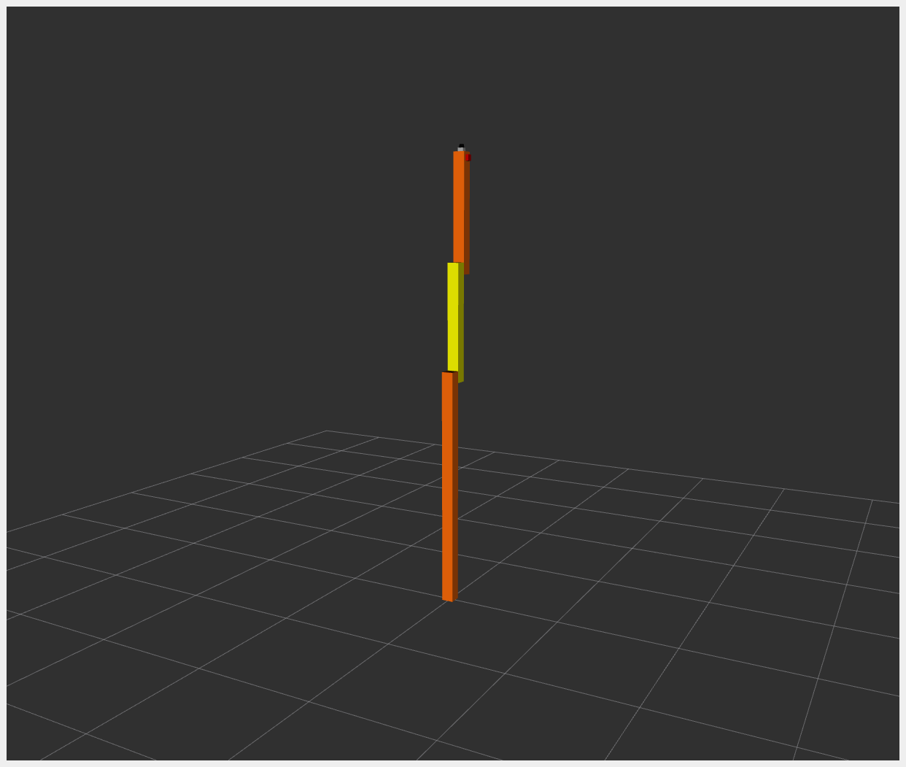

RRBot
RRBot, or Revolute-Revolute Manipulator Robot, is a simple 3-linkage, 2-joint arm used to demonstrate various features.
It is essentially a double inverted pendulum and demonstrates some control concepts within a simulator. It was originally introduced for Gazebo tutorials.
For example_1, the hardware interface plugin is implemented with only one interface:
Communication is done using proprietary API to communicate with the robot control box.
Data for all joints is exchanged at once.
Example: KUKA RSI
The RRBot URDF files can be found in the description/urdf folder.
Tutorial Steps
0. Prerequisites
Ensure you have the following packages installed:
cd
mkdir -p colcon_control_ws/src
cd colcon_control_ws/src
git clone -b demo/tricycle https://github.com/ipa-vsp/ros2_control_demos.git
cd ..
rosdep install --from-paths src -iry
colcon build --symlink-install
source install/setup.bash
1. Check RRBot Description Launch
(Optional) To verify that RRBot descriptions are working properly, run:
ros2 launch ros2_control_demo_example_1 view_robot.launch.py
In another terminal, launch the GUI:
source /opt/ros/${ROS_DISTRO}/setup.bash
ros2 run joint_state_publisher_gui joint_state_publisher_gui
Start RViz:
source /opt/ros/${ROS_DISTRO}/setup.bash
rviz2 -d src/ros2_control_demos/ros2_control_demo_description/rrbot/rviz/rrbot.rviz
Note: Warning
Invalid frame ID "odom" passed to canTransformis expected. It happens whilejoint_state_publisher_guiis starting.

Once working, stop RViz using CTRL+C.
2. Start RRBot Launch
ros2 launch ros2_control_demo_example_1 rrbot.launch.py
This starts the robot hardware, controllers, and opens RViz. If you see two orange and one yellow rectangle in RViz, it is working.
3. Check Hardware Interface
ros2 control list_hardware_interfaces
Expected output:
command interfaces
joint1/position [available] [claimed]
joint2/position [available] [claimed]
state interfaces
joint1/position
joint2/position
4. Check Running Controllers
ros2 control list_controllers
Expected output:
joint_state_broadcaster[joint_state_broadcaster/JointStateBroadcaster] active
forward_position_controller[forward_command_controller/ForwardCommandController] active
5. Send Commands
a. Using CLI:
ros2 topic pub /forward_position_controller/commands std_msgs/msg/Float64MultiArray "data:
- 0.5
- 0.5"
b. Using Demo Node:
ros2 launch ros2_control_demo_example_1 test_forward_position_controller.launch.py
You should see motion in RViz and terminal logs like:
[INFO] Writing commands:
0.50 for joint 'joint2/position'
0.50 for joint 'joint1/position'
To verify joint state outputs:
ros2 topic echo /joint_states
ros2 topic echo /dynamic_joint_states
6. Switch to Joint Trajectory Controller
Load controller:
ros2 control load_controller joint_trajectory_position_controller $(ros2 pkg prefix ros2_control_demo_example_1 --share)/config/rrbot_jtc.yaml
List controllers:
ros2 control list_controllers
Expected:
joint_state_broadcaster[...] active
forward_position_controller[...] active
joint_trajectory_position_controller[...] unconfigured
Configure controller:
ros2 control set_controller_state joint_trajectory_position_controller inactive
Alternatively:
ros2 control load_controller --set-state inactive joint_trajectory_position_controller $(ros2 pkg prefix ros2_control_demo_example_1 --share)/config/rrbot_jtc.yaml
Activate controller:
ros2 control switch_controllers --activate joint_trajectory_position_controller --deactivate forward_position_controller
Verify:
ros2 control list_controllers
Should return:
joint_state_broadcaster[...] active
forward_position_controller[...] inactive
joint_trajectory_position_controller[...] active
Launch demo node:
ros2 launch ros2_control_demo_example_1 test_joint_trajectory_controller.launch.py
7. Use rqt_joint_trajectory_controller GUI
ros2 control load_controller joint_trajectory_position_controller $(ros2 pkg prefix ros2_control_demo_example_1 --share)/config/rrbot_jtc.yaml --set-state inactive && ros2 control switch_controllers --activate joint_trajectory_position_controller --deactivate forward_position_controller
Launch GUI:
ros2 run rqt_joint_trajectory_controller rqt_joint_trajectory_controller
Features:
Dropdown to select controller
Sliders to set joint positions
Control execution time
Send trajectory commands
Files Used for This Demo
Launch file: rrbot.launch.py
Controllers YAML:
URDF files:
RViz config: rrbot.rviz
Test configs:
Hardware interface: rrbot.cpp